From geological mechanisms to contact, risk and DHI — in one model.
Don't specify the HCWC — derive it from the geology.
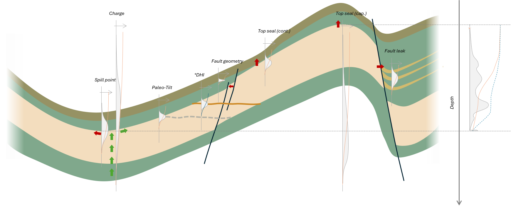
Apex, spill, the element chances giving P(G), the assessment minimum, the well. Tab 2.0.
A capacity in metres below the crest, a mapped surface as a depth — whichever the geologist knows. Tab 3.0.
Each limit drawn for presence and depth; the shallowest active one sets the contact and is recorded. Tab 4.0.
The same realisations are reweighted. No second model, no arbitrary "DHI case". Tab 5.0.
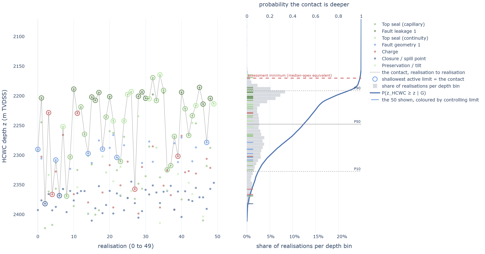
Minimum, not a blend — a limit only changes realisations that reach it. Blending a deep leak into a background distribution can make a prospect look larger.
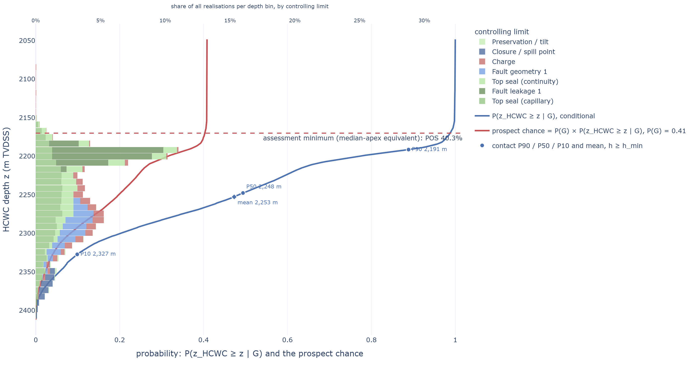
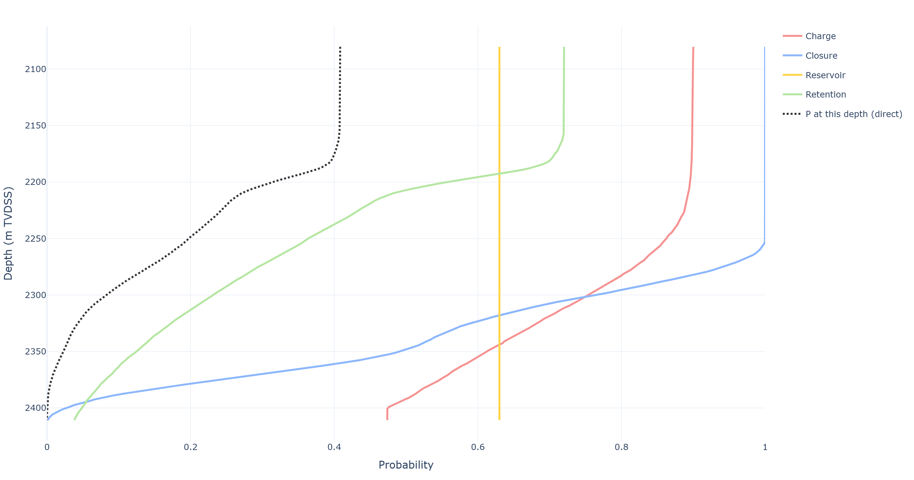
A seismic indication is evidence, not a separate case.
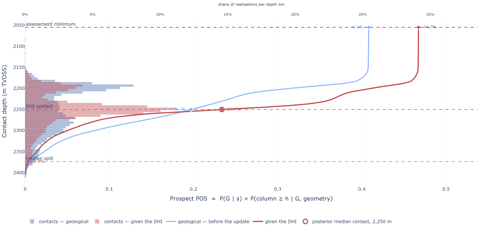
Self-normalised importance sampling: the posterior is the same sample, reweighted.
What it is not. Substituting a DHI contact depth treats an observation as a scenario — and a scenario cannot be argued with on geological grounds.
One observation, two kinds of evidence — each updating exactly one factor.
Amplitude, polarity, conformity, offset behaviour, placed on the evidence index. Updates the chance; never moves the contact.
The picked depth and the confidence in it, as a likelihood over realisations already drawn. Reshapes the contact; never moves P(G).
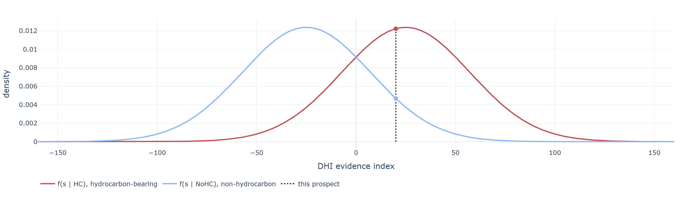
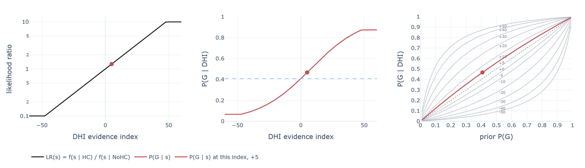
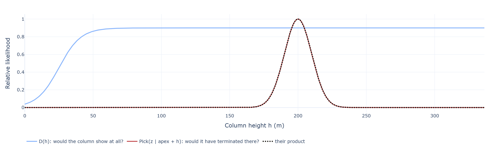
Filled-to-spill discoveries are right-censored, not measurements.
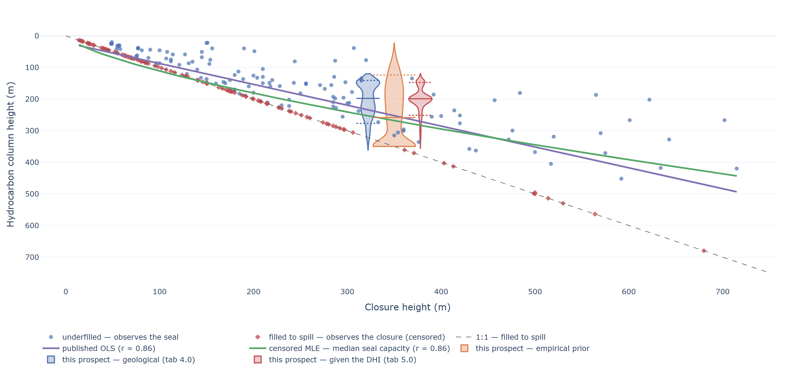
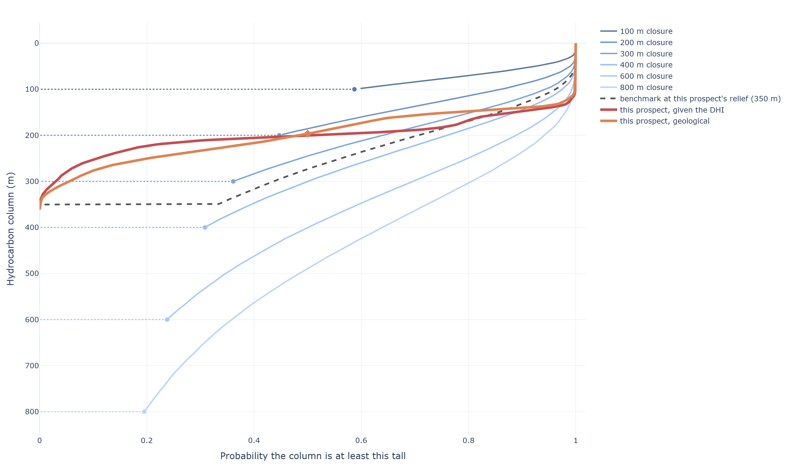
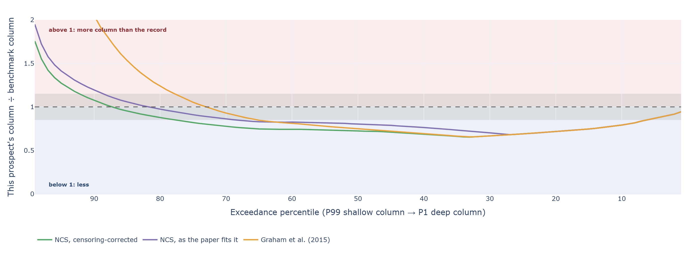
Merging them is where most of the confusion in this area comes from. Every probability the app prints says which it is, whether it includes P(G), and the threshold it was read at.
| Quantity | What it is | Conditional on |
|---|---|---|
| P(G) | An accumulation exists at all — the elements worked at the crest. | Nothing |
| F(h) = P(H ≥ h | G) | The column reaches h, given an accumulation. What the limits produce. | An accumulation |
| POS(h) = P(G) × F(h) | Hydrocarbons found at that depth — the product, and what an explorer wants. | Nothing |
The commonest error. Quoting the conditional curve as the prospect's chance sets P(G) to 1 and overstates the prospect by 1 / P(G) — largest exactly where the geology is least certain.
A deeper contact cannot be likelier than a shallower one — every point is read off one sample. A band-by-band array has no such guarantee.
A wide range can rarely decide the answer; a narrow one that usually decides it moves everything. Both are reported, separately.
Effective sample size says how concentrated the weighting became. A low value is not wrongness — it means the result leans on few realisations.
A missing anomaly counts only in so far as that column would have been detectable. The ceiling on D(h) is below 1 by construction.
Charge, reservoir, closure, retention.
Spill, charge, seal capacity and continuity, fault leakage, mechanical failure, pinch-out.
Emerges from the competition, with the controlling mechanism recorded.
The product, read at the minimum and at the well — then updated by evidence.
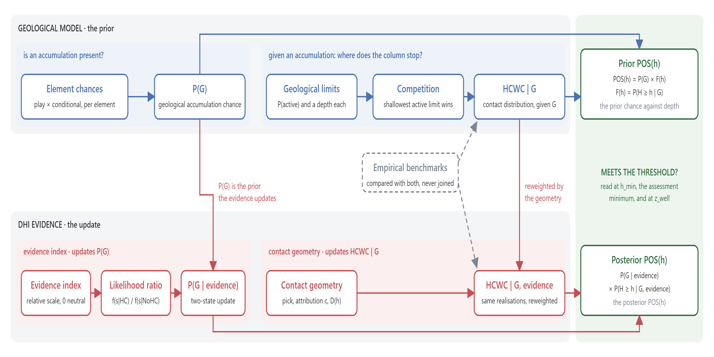
What it is not. Not a basin, hydrodynamic or 3D flow model. Where a more detailed model exists, its output enters as one more competing limit.